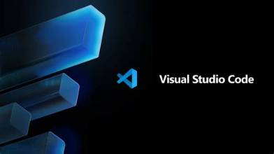
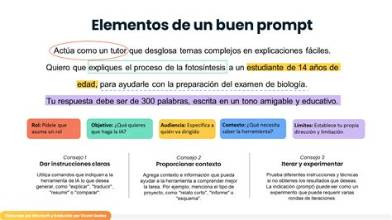

Es una herramienta que permite crear, modificar y gestionar el contenido de una página web sin necesidad de ser experto en programación. Facilita el diseño y la organización de todo lo que se ve en internet.
¿Para qué sirve? Para crear páginas, cambiar textos e imágenes, organizar información y publicarla en internet de forma sencilla.

Es un sistema informático capaz de realizar tareas que normalmente requieren inteligencia humana: entender textos, reconocer imágenes, resolver problemas y crear contenido.
¿Para qué sirve? Sirve para generar información, responder dudas, crear diseños, traducir, resolver tareas y ayudarnos en muchas actividades de forma rápida.
Es la instrucción o mensaje que le damos a una Inteligencia Artificial para que realice una tarea. Un buen prompt da mejores resultados.
Elementos de un buen prompt:
